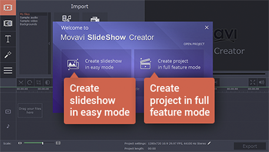
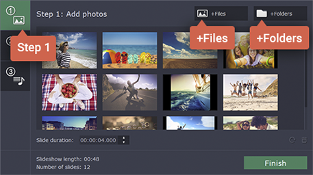
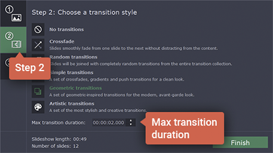
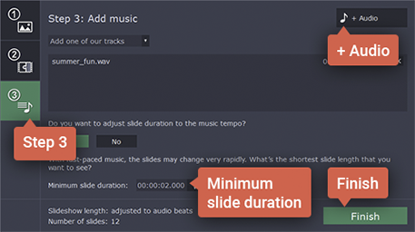
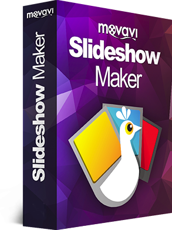
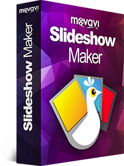

How to Make Videos with Pictures and Music
Did you have a great vacation this summer? Give yourself a positive emotional boost for
the winter by creating an evoca-
tive slideshow with music and titles or a photo collage from your holiday photos! With Movavi Slideshow Maker, you can turn your photos into a movie in just a couple of minutes even if you have no experience in video montage. Interested? Let’s get started!
tive slideshow with music and titles or a photo collage from your holiday photos! With Movavi Slideshow Maker, you can turn your photos into a movie in just a couple of minutes even if you have no experience in video montage. Interested? Let’s get started!
-
1. Install the Program on Your Computer
Download Movavi’s slideshow creator and run the installation file. The onscreen instructions will guide you through the setup process.
-
2. Select the Working Mode
When you launch Movavi’s slideshow maker with the music-adding capability, you’ll see a Welcome window. In this window, you can choose one of two working modes: Easy mode or Full feature mode. If you want to quickly make a slideshow with photos, music and transitions, choose Create slideshow in easy mode. If you want to incorporate video footage, titles, special effects, and other enhancements to your movie, choose Create project in full feature mode. Instructions for both modes follow below.
-
3. Create a Slideshow
-
3.1. Upload Your Photos
Welcome to the Slideshow Wizard! In the first tab, upload your images by clicking +Files or +Folders and choosing the pictures to include. When the uploaded photos appear in the working area, you can drag them into any order, as well as rotate or remove them by clicking the relevant icons on each of the images. You can also set Slide duration in the appropriate field.
-
3.2. Add Transitions
Open the second tab. Here, you can choose the transition style to join your photos, or click No transitions if you don’t want fades in your slideshow. To adjust the speed of transition from one slide to the next, set the Max transition duration in the field below the list of transition styles.
-
3.3. Add Music
Open the third tab. To upload your own audio files, click +Audio. To use one of the built-in melodies, click Add one of our tracks. You can also automatically synchronize slide duration to the music tempo. To do this, click the Yes button and set Minimum slide duration. Finally, click Finish. All that’s left is save your photo movie. To learn how to export your slideshow, see Step 4 below. Your photo movie is almost ready. Go to Step 4 to learn how to export your slideshow.
-
3.1. Upload Your Photos
Welcome to the Slideshow Wizard! In the first tab, upload your images by clicking +Files or +Folders and choosing the pictures to include. When the uploaded photos appear in the working area, you can drag them into any order, as well as rotate or remove them by clicking the relevant icons on each of the images. You can also set Slide duration in the appropriate field.
-
3.2. Add Transitions
Open the second tab. Here, you can choose the transition style to join your photos, or click No transitions if you don’t want fades in your slideshow. To adjust the speed of transition from one slide to the next, set the Max transition duration in the field below the list of transition styles.
-
3.3. Add Music
Open the third tab. To upload your own audio files, click +Audio. To use one of the built-in melodies, click Add one of our tracks. You can also automatically synchronize slide duration to the music tempo. To do this, click the Yes button and set Minimum slide duration. Finally, click Finish. All that’s left is save your photo movie. To learn how to export your slideshow, see Step 4 below. Your photo movie is almost ready. Go to Step 4 to learn how to export your slideshow.
-
3.4. Add Videos
Open the third tab. To upload your own audio files, click +Audio. To use one of the built-in melodies, click Add one of our tracks. You can also automatically synchronize slide duration to the music tempo. To do this, click the Yes button and set Minimum slide duration. Finally, click Finish. All that’s left is save your photo movie. To learn how to export your slideshow, see Step 4 below.
-
3.5. Make Someone Happy
Welcome to the Slideshow Wizard! In the first tab, upload your images by clicking +Files or +Folders and choosing the pictures to include. When the uploaded photos appear in the working area, you can drag them into any order, as well as rotate or remove them by clicking the relevant icons on each of the images. You can also set Slide duration in the appropriate field.
-
4. Save Your Clip
Click the Export button and select the appropriate option from the tabs in the upper part of the pop-up window. You can save your slideshow to watch on your computer or mobile device, or prepare it for uploading to the web. When you’re done, click Start. Now you know how to use our handy photo-to-video maker with music, titles and transitions!
Movavi Slideshow Maker


Movavi Slideshow Maker
An easy-to-use, yet efficient slideshow making program
Create a slideshow with music in 3 simple steps
Join slides with dynamic transitions
Add stylish animated tiles
Adjust color, enhance picture quality
See other useful How To Guides
How to shrink photos
How to make a slideshow
How to make a Christmas slideshow
And much more
Have questions?